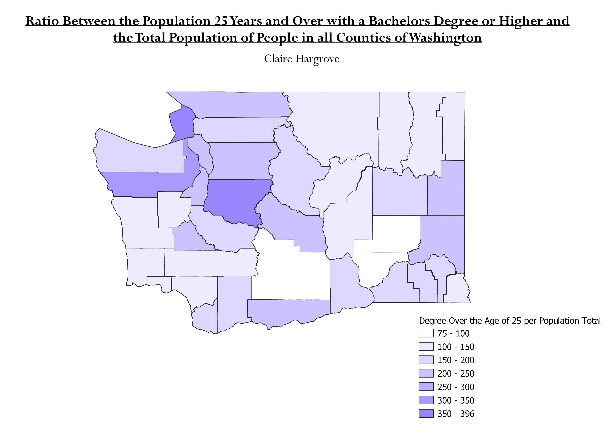

Homework 6: Census Data Ratios and Categories
Claire Hargrove
The chloropleths below is based off a new 5-year data (in comparison to part 1 so that all counties are shown), and illustrates a ratio between the total population 25 years and over with a bachelors degree or higher and the total population of people in all of the counties of Washington. The ratio shows how many people within each county have a bachelors degree. Since most college graduates over 25 have a bachelors degree I chose to create a ratio compared to the total population to explain how many people within each county are college-educated/have a bachelor's degree out of all the counties.
The map below shows the ratio categorized using natural breaks. I chose to include this as a control, since this method was used for part 1 of homework 6. It is benficial since it categorizes naturally between the most breaks in the data set. However, data sets with more similarities between variables causes confusion and makes the map harder to read.
The map below shows the ratio categorized using standard deviation. It is beneficial because it shows variance between data sets but it is not by "natural" breaks, but by the standard deviation between variables. This is good because it better shows popularity amongst categories, but is detrimental because it does not distinguish between categories as much and can become difficult to read.
The map below shows the ratio categorized using equal intervals. This classification is easy to read because it divides the data into equal size ranges and more drastically shows the differences between data. It is not as beneficial in terms of clarity, because the quantity of categories in one class can range.
The map below shows the ratio categorized using pretty breaks. This type of classification rounds each break up or down to a 'pretty' number. It can be difficult to read though, as there can be many categories and similar color shades.

Data used for this project
CSV dataset
Dataset with Total Age
WA County Boundary
GeoJSON File